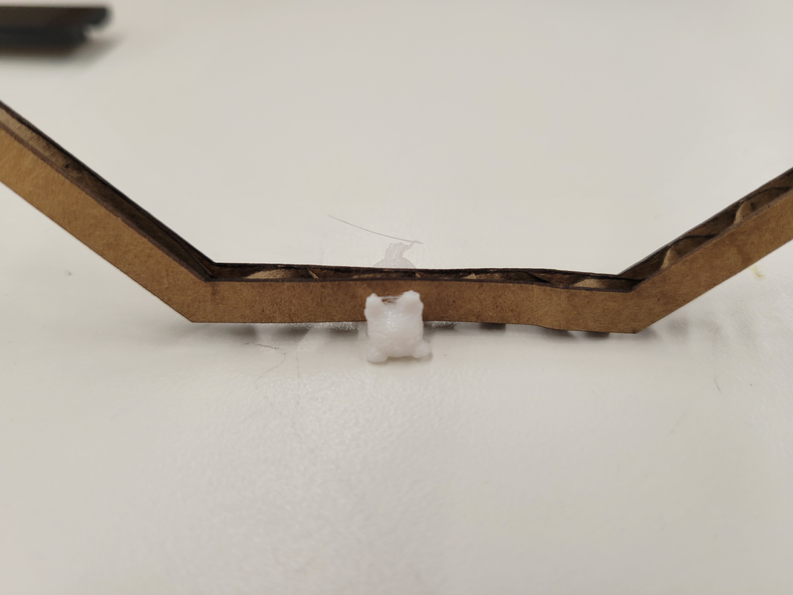
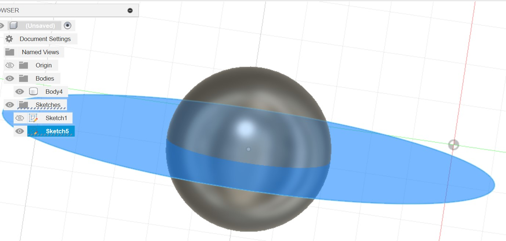
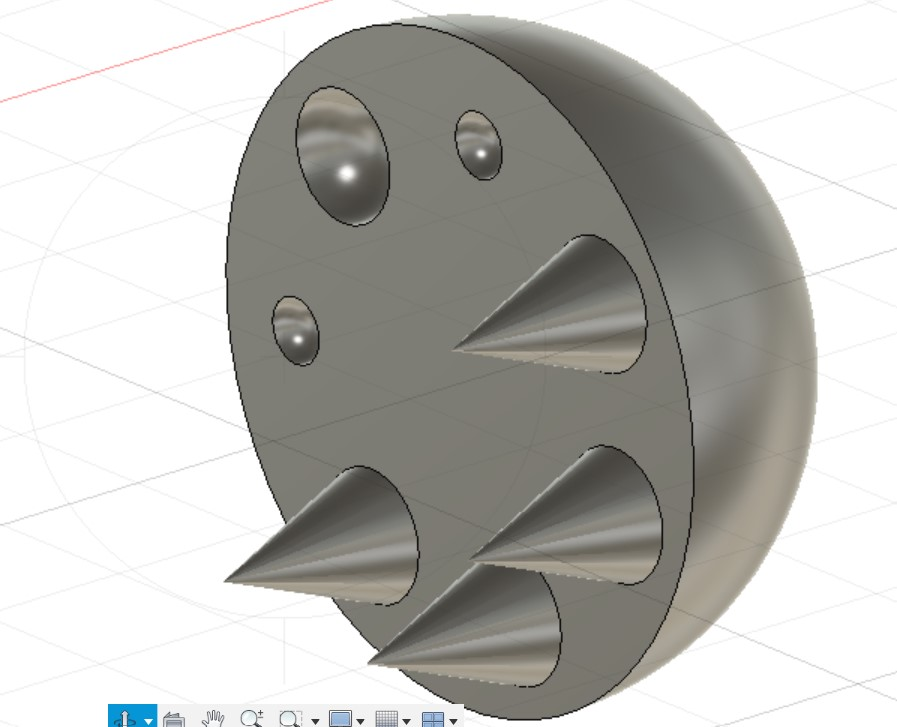
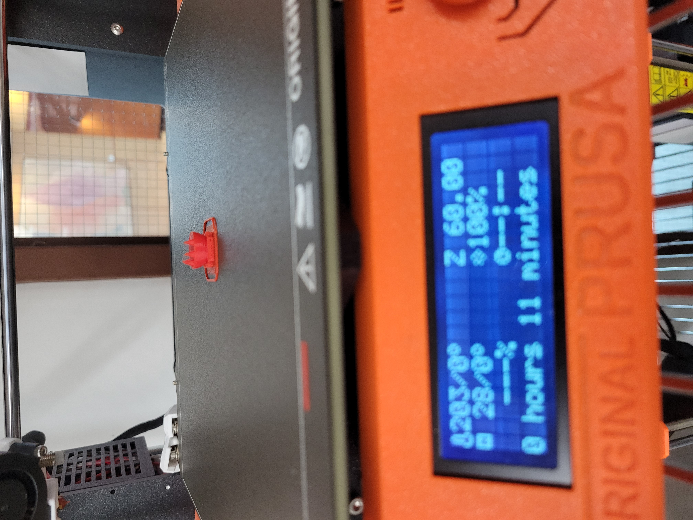
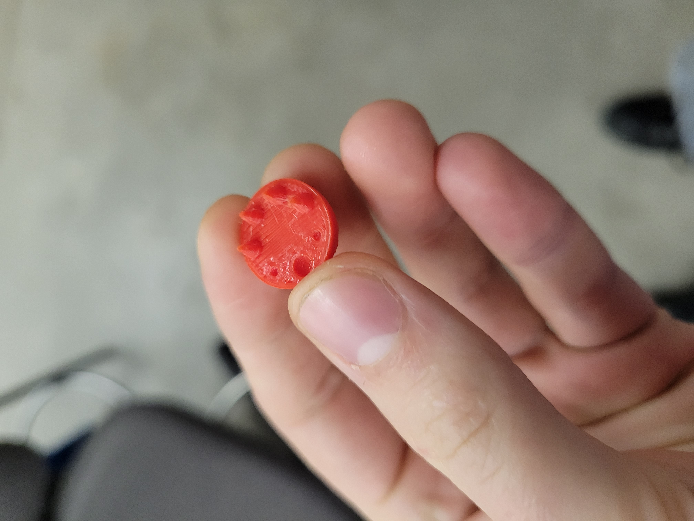

<br>
#### Week 5, 3D printing

I 3D printed the tiny cat during lab, and used prusa slicer to scale it down to 30%




Then in Fusion I made this little toy, it combines many of my favorite textures. The spikes are especially good. I was thinking about what would be hard to make via lazercutting when I designed it, but still possible to print with very few supports. There are no steep overhangs but the toy includes many curves.